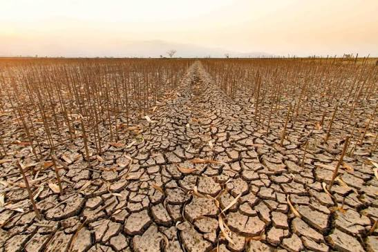

As global temperatures rise and the human population expands, more of the planet is vulnerable to desertification, the permanent degradation of land that was once arable. While interpretations of the term desertification vary, the concern centers on human-caused land degradation in areas with low or variable rainfall known as drylands: arid, semi-arid, and sub-humid lands. These drylands account for more than 40 percent of the world's terrestrial surface area. While land degradation has occurred throughout history, the pace has accelerated, reaching 30 to 35 times the historical rate, according to the United Nations. This degradation tends to be driven by a number of factors, including urbanization, mining, farming, and ranching. In the course of these activities, trees and other vegetation are cleared away, animal hooves pound the dirt, and crops deplete nutrients in the soil. Climate change also plays a significant role, increasing the risk of drought. All of this contributes to soil erosion and an inability for the land to retain water or regrow plants. About 2 billion people live on the drylands that are vulnerable to desertification, which could displace an estimated 50 million people by 2030. Where is desertification happening, and why? The risk of desertification is widespread and spans more than 100 countries, hitting some of the poorest and most vulnerable populations the hardest, since subsistence farming is common across many of the affected regions. More than 75 percent of Earth's land area is already degraded, according to the European Commission's World Atlas of Desertification, and more than 90 percent could become degraded by 2050. The commission's Joint Research Centre found that a total area half of the size of the European Union (1.61 million square miles, or 4.18 million square kilometers) is degraded annually, with Africa and Asia being the most affected.
